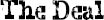

MOM AND MR. TUSHMAN were talking when we got back to the office. Mrs. Garcia was the first to see us come back, and she started smiling her shiny smile as we walked in.
“So, August, what did you think? Did you like what you saw?” she asked.
“Yeah.” I nodded, looking over at Mom.
Jack, Julian, and Charlotte were standing by the door, not sure where to go or if they were still needed. I wondered what else they’d been told about me before they’d met me.
“Did you see the baby chick?” Mom asked me.
As I shook my head, Julian said: “Are you talking about the baby chicks in science? Those get donated to a farm at the end of every school year.”
“Oh,” said Mom, disappointed.
“But they hatch new ones every year in science,” Julian added. “So August will be able to see them again in the spring.”
“Oh, good,” said Mom, eyeing me. “They were so cute, August.”
I wished she wouldn’t talk to me like I was a baby in front of other people.
“So, August,” said Mr. Tushman, “did these guys show you around enough or do you want to see more? I realize I forgot to ask them to show you the gym.”
“We did anyway, Mr. Tushman,” said Julian.
“Excellent!” said Mr. Tushman.
“And I told him about the school play and some of the electives,” said Charlotte. “Oh no!” she said suddenly. “We forgot to show him the art room!”
“That’s okay,” said Mr. Tushman.
“But we can show it to him now,” Charlotte offered.
“Don’t we have to pick Via up soon?” I said to Mom.
That was our signal for my telling Mom if I really wanted to leave.
“Oh, you’re right,” said Mom, getting up. I could tell she was pretending to check the time on her watch. “I’m sorry, everybody. I lost track of the time. We have to go pick up my daughter at her new school. She’s taking an unofficial tour today.” This part wasn’t a lie: that Via was checking out her new school today. The part that was a lie was that we were picking her up at the school, which we weren’t. She was coming home with Dad later.
“Where does she go to school?” asked Mr. Tushman, getting up.
“She’s starting Faulkner High School this fall.”
“Wow, that’s not an easy school to get into. Good for her!”
“Thank you,” said Mom, nodding. “It’ll be a bit of a schlep, though. The A train down to Eighty-Sixth, then the crosstown bus all the way to the East Side. Takes an hour that way but it’s just a fifteen-minute drive.”
“It’ll be worth it. I know a couple of kids who got into Faulkner and love it,” said Mr. Tushman.
“We should really go, Mom,” I said, tugging at her pocketbook.
We said goodbye kind of quickly after that. I think Mr. Tushman was a little surprised that we were leaving so suddenly, and then I wondered if he would blame Jack and Charlotte, even though it was really only Julian who made me feel kind of bad.
“Everyone was really nice,” I made sure to tell Mr. Tushman before we left.
“I look forward to having you as a student,” said Mr. Tushman, patting my back.
“Bye,” I said to Jack, Charlotte, and Julian, but I didn’t look at them—or look up at all—until I left the building.